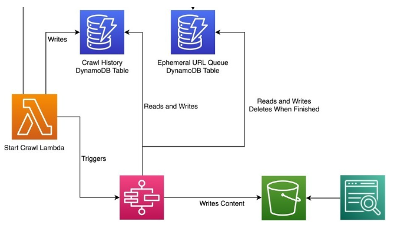

PharmaSaver: Your Ticket to Affordable Prescriptions
Client Success Story: Pharmacy Saving Advisor Uncovering Lowest Medication Costs
Introduction:
In the healthcare industry's data-centric landscape, accessing precise and real-time pricing details for prescription medications is pivotal. In this blog, we explore an intricate yet ingenious solution designed to surmount the obstacles presented by websites such as costplusdrugs.com and goodrx.com. Our approach empowers Health Saver Pharmacy to furnish customers with the most budget-friendly choices for their prescription medicines.
Challenges:
- Website Structure: The target websites (costplusdrugs.com and goodrx.com) have varying structures, including dynamic elements loaded through JavaScript. This makes it challenging to locate and extract the required data using traditional scraping techniques.
- Anti-Scraping Mechanisms: Websites often implement anti-scraping mechanisms to deter automated data collection. These mechanisms include CAPTCHAs, rate limiting, and dynamic element IDs, posing challenges to consistent and reliable scraping.
- Data Accuracy: Ensuring the accuracy of scraped data is crucial. Prices may be displayed in different formats, and extracting the correct pricing information while accounting for variations becomes a challenge.
Solution:
The solution to the challenge encompasses several essential components:

Architecture diagram for the Pharmacy Saving project
- Selenium WebDriver: To handle the dynamic aspects of the websites, we utilized the Selenium WebDriver with Python. This allowed us to interact with the websites just like a human user, enabling us to bypass some anti-scraping measures and extract data from JavaScript-rendered content.
- CAPTCHA Handling: In case of encountering CAPTCHAs, we implemented a manual intervention mechanism. When the scraper encountered a CAPTCHA, it paused and prompted an operator to solve it before resuming scraping.
- Properties used for scraping: We used CLASS_NAME, XPATH, TAG_NAME, and CSS selectors to locate and extract specific elements from the web pages. These techniques provided flexibility in adapting to changes in the website's structure.
- Data Parsing and Normalization: Extracted data, especially prices, underwent thorough parsing and normalization to ensure consistency in formats. Regular expressions and string manipulation were employed for this purpose.
Workflow:
- Website Navigation: The scraper uses the Selenium WebDriver to navigate to the target websites' pages for various drugs.
- Data Extraction: CLASS_NAME, XPATH, TAG_NAME, and CSS selectors are employed to locate drug names, dosages, and prices on the pages. The scraper interacts with dynamic elements to load necessary content.
- Data Processing: Extracted data is parsed and normalized. Price formats are standardized for accurate comparison.
- Comparison: Scraped prices from both websites for the same drug are compared to find the lowest price.
- Output: The lowest price for each drug is stored in a structured format (e.g., CSV, JSON) for easy reference and analysis.
Conclusion:
Through diligent web scraping using Selenium, we successfully tackled the challenges posed by costplusdrugs.com and goodrx.com to find the lowest prices for various drugs. By combining automation, human intervention for CAPTCHAs, and data normalization techniques, we ensured accurate and consistent results. This web scraping project equips Health Saver Pharmacy to provide its customers with up-to-date information on the most cost-effective options for their prescription medications.